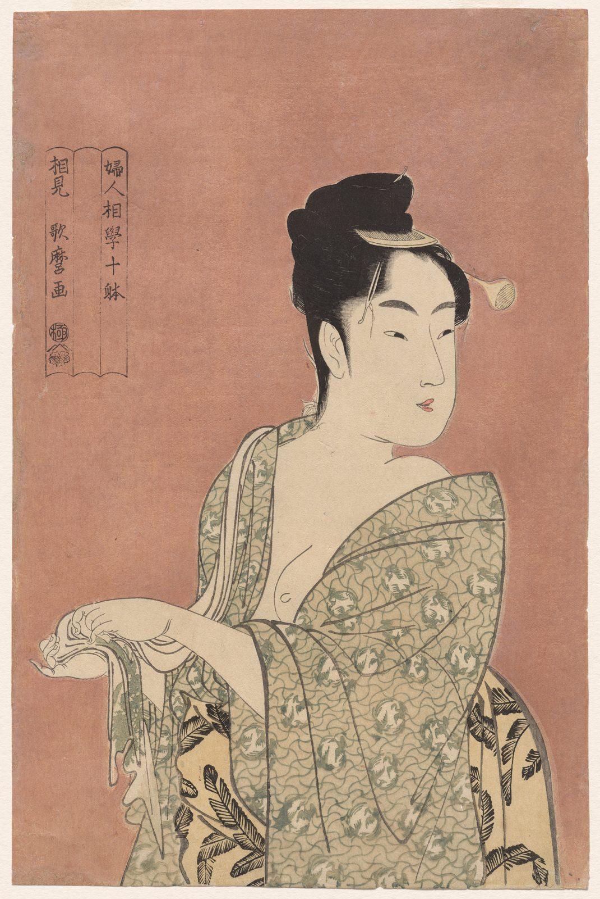

References / Illustration / 566
Utamaro, The Flirtatious Type, from Ten Types in the Physiognomy of Women
A half-length woman glances back over a bare shoulder against a plain pink ground, in one of Kitagawa Utamaro’s close-up portraits of beauties.
- Source
- Cleveland Museum of Art, 1930.218
- Creator
- Kitagawa Utamaro
- Made
- c. 1793
- Style
- Ukiyo-e (agent-proposed, not yet reviewed by a person)
- Moods
- Elegant, intimate, calm
- Evidence
- Downloaded and inspected the Cleveland Museum of Art print image of 1930.218 (2274 × 3400 px, viewed at 1070 × 1600).
- Reviewed
- Rights
- Open license, stored. License: CC0-1.0. Rights policy
Context
Cleveland catalogues the sheet as a color woodblock print, 36.9 × 25.4 cm, about 1793, from the series Ten Types in the Physiognomy of Women. CMA 1930.218.
Cleveland says that Utamaro was known for close-up portraits in the bijinga genre, and that only two impressions from this series have pink mica. CMA.
Observed
- The ground is one flat dusty pink over the whole sheet, with no setting.
- The woman is cut by the bottom edge. She stands right of center and looks back to the right.
- Her face, neck, and hands are unprinted paper with thin dark outlines. The hair is solid black with fine hair lines at the edges.
- The outer robe is translucent pale green with a wave-line pattern and round crests. The under-robe shows black leaf shapes on yellow.
- A cartouche of three joined vertical panels at upper left holds the series title, the signature, and a seal.
Why it belongs
The plain colored ground removes setting and leaves outline, pattern, and pose to carry the image.
The cartouche is part of the composition: it balances the figure on the left side of the sheet.
Borrow
Use one flat colored ground behind a single subject, and balance the subject with a narrow text panel on the other side.
Show one pattern through another, like the translucent robe over the under-robe.
Measured
Machine-extracted by tools/image-traits.py on . Full measurement.
- Mean chroma
- 0.23
- Palette
- #bb8973 52%
- #c1ac8c 10%
- #dcc5a9 9%
- #ae9d80 7%
- #f7ede3 5%
- #988b71 3%
- #3a3431 3%
- #8c8069 2%



share_license_status: CC0 for this object. Utamaro died in 1806, so the work is public domain in Japan and the United States. License: CC0-1.0. Open the image for full size.